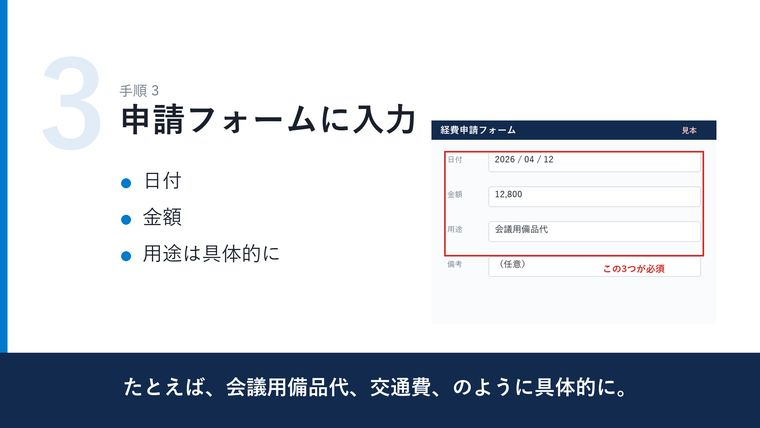
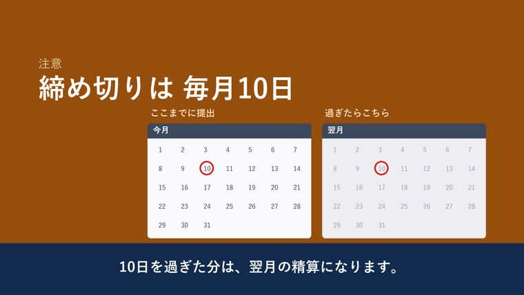
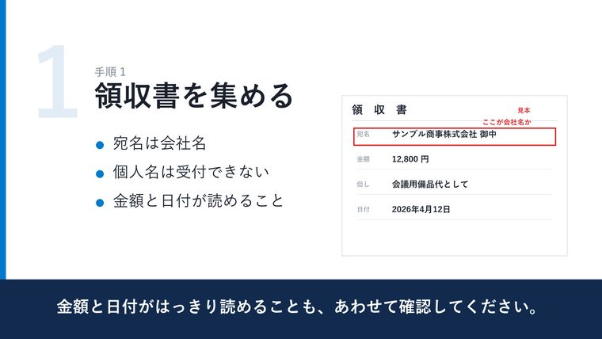
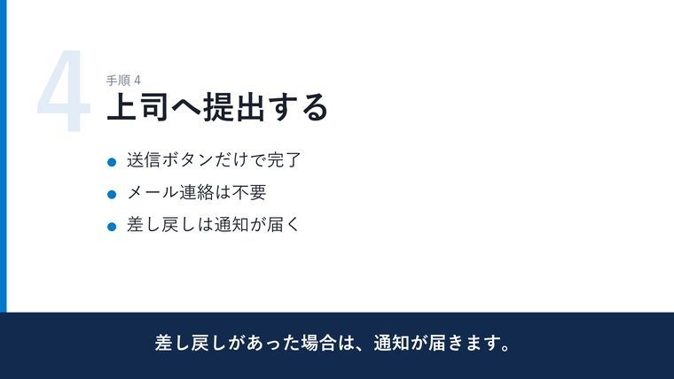

1.0 — 原稿
テキストを送っていただくところから始まります。
形式は問いません。Word でも、メールの本文でも、社内の手順書をそのまま貼っていただいても構いません。読み上げる文章がそこにあれば足ります。
まだ原稿が無い場合は、箇条書きのメモから構成をこちらで組み立てます。
- いただくもの
- 原稿のテキスト
- あると早いもの
- 社名・製品名の読み方、既存のスライド
- 不要なもの
- 撮影、ナレーターの手配、編集ソフト
2.0 — 初稿
完成品の前に、通しで観られる形をお渡しします。
読み上げ・スライド・字幕まで入った状態でお送りします。ここで「この読み方は違う」「この行は残したい」を出していただくのが、いちばん手戻りが小さくなります。
社名や製品名の読み方は、この段階で確定させます。
- お渡しする形
- 通しで観られる動画
- 見ていただく点
- 読み方・言い回し・並び順
- 目安
- 原稿を受け取ってから3営業日

3.0 — 納品
直したものを、そのまま使える形で。
MP4（1920×1080）と字幕データでお渡しします。社内の共有フォルダにも、研修システムにも、そのまま載せられる形です。
縦型が必要な場合は、同じ原稿から作り直します。
- 納品物
- MP4 ＋ 字幕データ
- 修正
- 2回まで料金に含みます
- その後
- 原稿を差し替えれば、同じ体裁で作り直せます

4.0 — 料金
動画の長さと本数で決まります。
通常動画は完成尺、FAQ短編は本数で決まります。原稿の文字数だけで金額が増える値付けにはしていません。
- 表示は税別です。修正は2回まで含みます（3回目以降は1回 5,000円）。
- FAQ短編は、指定いただいた既存ヘルプ1記事からの要点整理と台本作成を含みます。
- FAQ短編以外で原稿の作成からご依頼の場合は 20,000円 から承ります。
- 画面・ロゴ・図版は、利用許可と公開範囲を確認してから制作します。
5.0 — 書き出す前に止めていること
再生しても気づけないところを、納品までに潰します。
どれも、再生してみても気づけません。波形もファイルも正常なまま通ってしまうからです。工程の中に関所を置いて、通らなければ先へ進まないようにしています。
照合
読み間違えやすい言葉
「上長」「十分」「代替」のように読みが割れる言葉を一覧で持っていて、原稿に混じっていると工程が止まります。止まったら、言い換えるか読み方を辞書に登録してから先へ進みます。御社名・製品名も同じ扱いです。
照合
文字化け
フォントに無い文字は、警告もなく四角い箱か空白になります。画面に出る文字を1字ずつフォントと突き合わせ、1字でも欠けていれば書き出しを止めます。
検算
字幕と音声のずれ
映像と音声の長さを突き合わせ、基準を超えるずれがあれば書き出しを中止します。少しずつ溜まって最後に大きく外れる、という壊れ方を防ぎます。
実測
音量のばらつき
納品前に実測して補正します。「動画によって音量が違うので、その都度ボリュームを触る」が起きません。
6.0 — 見本
同じ工程で、1本通しで作った見本です。
「経費精算のやり方」を1本にしたものです。架空の会社の、架空の手順で作っています。実在の企業のものではありません。


7.0 — よくある質問
先に聞かれることを、先に書いておきます。
相場と比べて、この値段はどうなんですか。
公開されている料金表を当たったところ、撮影込みで作る会社の一例が1本385,000円から、ナレーションだけを代行する事務所の一例が30分70,000円（映像を付けると+6,000〜33,000円）でした。いずれも各1社の公開料金であり、相場そのものではありません。撮影も出演も無い代わりに、原稿から動画までを通しで作るので、その間に価格を置いています。
ナレーションは合成音声ですか。聞けば分かりますか。
合成音声です。注意して聞けば分かります。人の声そのものが商品になる用途には向きません。手順を正確に伝える、人によって説明がぶれない、あとから原稿だけ差し替えたい——そういう用途に向いています。
原稿がまだありません。
箇条書きのメモからでも始められます。構成からご依頼の場合は 20,000円 から承ります。逆に、既にある手順書をそのまま貼っていただくのがいちばん早いです。
社名や製品名を読み間違えませんか。
御社名・製品名・専門用語は、読み方を辞書に登録してから合成します。そのうえで、初稿の段階で読み方だけを確認していただけます。公開前に必ず一度、人の耳を通る形にしています。
社外に出せない原稿なのですが。
秘密保持契約の締結に対応します。ご希望の書式がある場合はお送りください。
請求書は出してもらえますか。
発行します。お支払いは納品後、銀行振込でお願いしています。御社の指定書式がある場合はそちらに合わせます。
原稿の分量と、希望する長さだけ、お知らせください。
「この原稿だと何分くらいで、いくらになるか」だけのご相談でも構いません。見積もりをお送りします。原稿をお持ちでなくても構いません。
やり取りはメールで完結します。通常1営業日以内にご返信します。
打ち合わせが必要な場合は、オンラインで平日の夜または土日に対応します。
お電話は承っておりません。日中に確実にお応えできないため、メールに一本化しています。